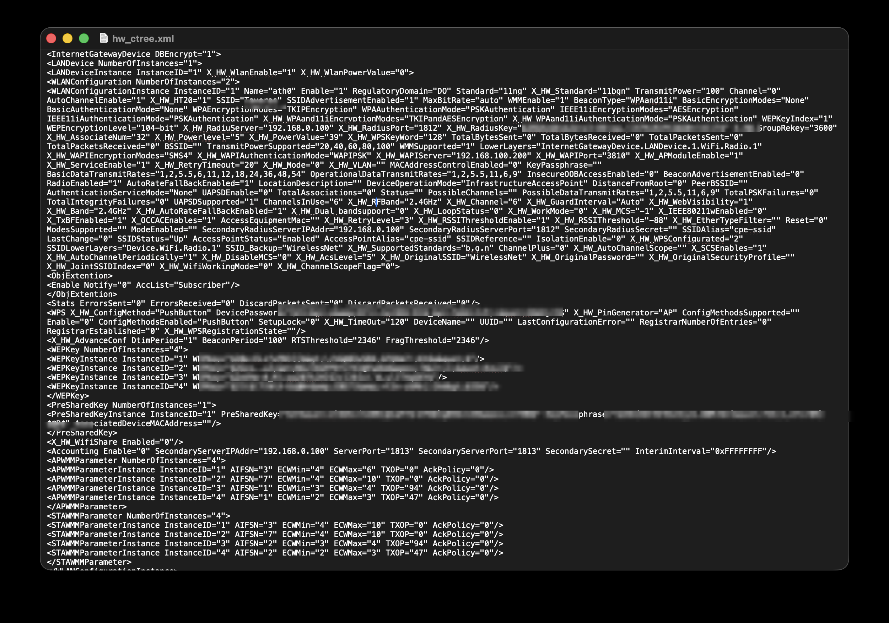

I was reviewing internet-facing telecom equipment in the Dominican Republic when a pattern started to emerge: customer-premises routers and optical network terminals with management services exposed to the public internet. On several devices I checked, familiar default credentials still worked.
There was no clever exploit. In several cases, the password had simply never been changed.
This is the first entry in a planned review of 20 Dominican telecom networks. Each provider will have its own scope, evidence, and findings. Nothing in this article should be read as a claim about a network that has not been examined.
The two ranges examined were described in public routing records using the names Dominican Telecom Prime (DTP), SRL and ISRAEL DE LOS SANTOS WIFI SRL.
AS271988 is registered to ISRAEL DE LOS SANTOS WIFI SRL. Its public routing page lists AS64126, identified there as Dominican Telecom Prime (DTP), SRL, as an upstream peer. This shows a routing relationship; it does not make the organizations the same company or prove which organization configured an individual subscriber device.
On September 12 and 13, 2026, I scanned two /24 ranges:
154.88.164.0/24, described as ISRAEL DE LOS SANTOS WIFI SRL154.88.162.0/24, described as Dominican Telecom Prime (DTP), SRLEach /24 contains 256 addresses. I used masscan 1.3.2 to perform a TCP SYN scan of ports 21, 22, 23, 25, 53, 80, 110, 139, 443, 3306, 3389, 5900, and 8080. The rate was set to 10,000 packets per second.
sudo masscan -p21,22,23,25,53,80,443,8080,110,139,3306,3389,5900 154.88.164.0/24 --rate=10000
sudo masscan -p21,22,23,25,53,80,443,8080,110,139,3306,3389,5900 154.88.162.0/24 --rate=10000This was a point-in-time snapshot, not a complete inventory. A host that did not respond could still have been online. An open port also does not prove that a login will succeed.
| Routing description | Scanned range | Scan time (UTC) | Responding hosts | Port 80 | Port 443 | Port 23 |
|---|---|---|---|---|---|---|
| ISRAEL DE LOS SANTOS WIFI SRL | 154.88.164.0/24 |
September 12, 2026, 15:53:41 | 34 | 29 | 5 | 2 |
| Dominican Telecom Prime (DTP), SRL | 154.88.162.0/24 |
September 13, 2026, 04:36:37 | 75 | 69 | 5 | 4 |
A device can appear in more than one port column, so the port totals do not equal the unique-host count. The supplied scan output contained no discoveries on the other ports in the scan list.
Most responses were HTTP management interfaces. A smaller number exposed HTTPS or Telnet. Follow-up inspection suggested that the equipment was largely a mix of ZTE F660, Huawei EG8141A5, and Huawei HG8546M devices.
The Telnet fingerprints recorded during follow-up included:
23/tcp open telnet ZTE F660 router telnetd 1.00-pre7 - 1.14.0
23/tcp open telnet Huawei Home Gateway telnetdThe ZTE version range is a scanner-generated estimate, not a verified firmware version. A service banner helps identify a device family, but it does not prove that the service is vulnerable.
My broader research notes also mention Dropbear SSH and Huawei Telnet on some devices. Both appeared to lead to the same device authentication environment. The two masscan outputs reproduced in this article did not report port 22, however, so the SSH observation remains a separate finding that needs its own captured scan evidence before publication.
One additional service on TCP/58000 presented a ZTE authentication realm. That port was outside the masscan command above, and the captured request did not prove a successful login.
I tested only a subset of the responding devices. The evidence falls into two categories: credentials that produced confirmed access and credentials that were tried without success.
| Device or service | Username | Password | Result |
|---|---|---|---|
| Huawei EG8141A5 and HG8546M web interfaces | root |
admin |
Administrative access confirmed on multiple sampled devices |
| Separate web endpoint; model not recorded | telecomadmin |
admintelecom |
Access recorded; device-model attribution remains open |
Two confirmed Huawei devices identified themselves as EG8141A5 terminals running V5R019C00S050. Another identified itself as an HG8546M running V3R017C10S208. Their administrative pages exposed serial numbers, registration status, hardware versions, memory use, and other operational details.
Administrative access also exposes the device configuration tree (hw_ctree.xml). Even with the database-level obfuscation these terminals use, the export reveals the full WLAN setup and lays out where every secret lives: the WPA/WPS material, the WEP key table, the pre-shared key and passphrase, and the RADIUS server key. All sensitive values below are redacted.

None of this requires an exploit. Once the default administrative password works, the configuration export is simply available — and with it, the credentials protecting the subscriber’s wireless network.
The following combinations were tested against sampled ZTE F660 devices. None worked on the devices tested. They are included as tested candidates, not as confirmed access credentials:
| Common label in research notes | Username | Password | Result |
|---|---|---|---|
| Common factory candidate | root |
ZTE@ZXV10 |
Unsuccessful on sampled F660 devices |
| Alternate firmware candidate | root |
ZTE@ZXHN |
Unsuccessful on sampled F660 devices |
| Regional firmware candidate | admin |
Web@0063 |
Unsuccessful on sampled F660 devices |
| ISP administration candidate | telecomadmin |
admintelecom |
Unsuccessful on sampled F660 devices |
The tested sample does not prove that every F660 in the ranges rejects these combinations. It also does not justify calling these accounts “backdoors.” That term requires evidence of a deliberately hidden access mechanism, which this research did not establish.
The table below records the IPv4 prefixes and descriptions collected during the routing review. Only 154.88.162.0/24 and 154.88.164.0/24 were scanned for this article. Every other entry is routing context rather than a vulnerability finding.
Parent ranges overlap the more-specific /24 entries and must not be counted as additional address space.
| CIDR | Status |
|---|---|
| 154.88.164.0/24 | Scanned; findings reported above |
| 154.88.165.0/24 | Routing context only |
| 154.88.174.0/24 | Routing context only |
| 154.88.177.0/24 | Routing context only |
These prefixes appeared beneath AS271988 with DTP descriptions in the research notes. The description does not mean that AS64126 originated the prefix.
| CIDR | Status |
|---|---|
| 154.88.162.0/24 | Scanned; findings reported above |
| 154.88.168.0/24 | Routing context only |
| 154.88.169.0/24 | Routing context only; current AS page displays geofeed text |
| 154.88.170.0/24 | Routing context only |
| 154.88.171.0/24 | Routing context only; current AS page displays geofeed text |
| 154.88.178.0/24 | Routing context only |
| CIDR | Description in research notes |
|---|---|
| 154.88.160.0/20 | Cloud Innovation Ltd; parent range |
| 154.88.161.0/24 | DCG geofeed |
| 154.88.163.0/24 | DCG geofeed |
| 154.88.166.0/24 | DCG geofeed |
| 154.88.167.0/24 | DCG geofeed |
| 154.88.172.0/24 | DCG geofeed |
| 154.88.173.0/24 | DCG geofeed |
| 154.88.175.0/24 | DCG geofeed |
| 154.88.176.0/22 | Cloud Innovation Ltd; parent range |
| 154.88.176.0/24 | DCG geofeed |
An address can be registered to one organization, originated by an autonomous system, routed through an upstream carrier, assigned by a downstream ISP, and terminate on equipment at a subscriber site. Those facts answer different questions.
The routing data connects AS271988 and AS64126, but it does not identify who installed or currently administers each exposed terminal. Likewise, a company name in a prefix description is not proof that the company owns the device responding at an address inside that prefix.
An administrative interface can control much more than a Wi-Fi name. Depending on the account and device configuration, access may allow changes to DNS, WAN settings, remote management, or other services. A public login page creates exposure. A working default administrative password turns that exposure into confirmed access.
Telnet adds another avoidable problem. Even where I did not confirm a login, an internet-facing Telnet service deserves review. Providers should determine whether it is needed and restrict it to a trusted management network.
The fixes are familiar:
INDOTEL regulates and supervises the Dominican Republic’s telecommunications sector; it does not operate the equipment described here. INDOTEL’s published materials describe that role. The relevant network operators are in the best position to validate affected devices, identify the provisioning path, and close the exposure.
The scans do not show that every responding router is vulnerable, and the login tests do not establish the total number of affected subscribers. They do show repeated internet-facing management services and confirmed default-credential access on multiple Huawei terminals in the sampled ranges.
One forgotten password is a device problem. The same mistake appearing across multiple devices is a reason to inspect the deployment process. Sometimes the front door really is just open.
Publication note: Recheck the exposure and document operator notification or response before publishing. Keep the live host list, serial numbers, screenshots, and exact host-to-credential mappings in a private disclosure package for the affected operators.